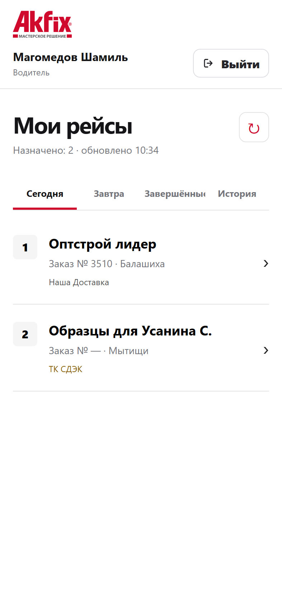
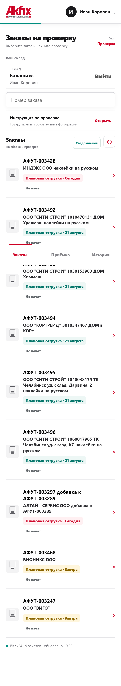
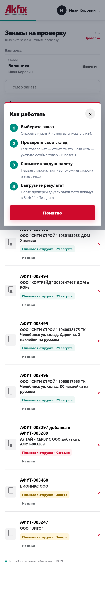
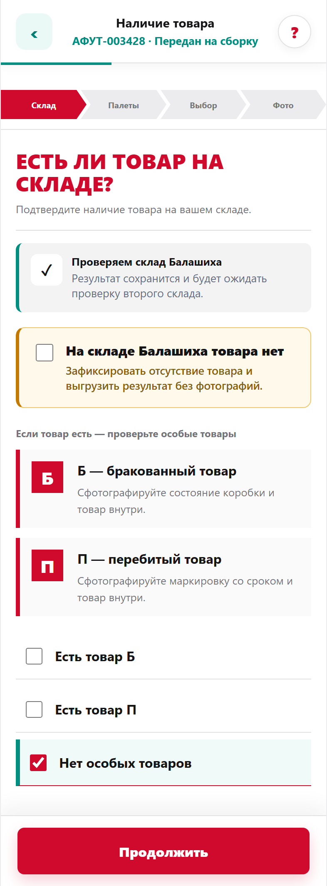
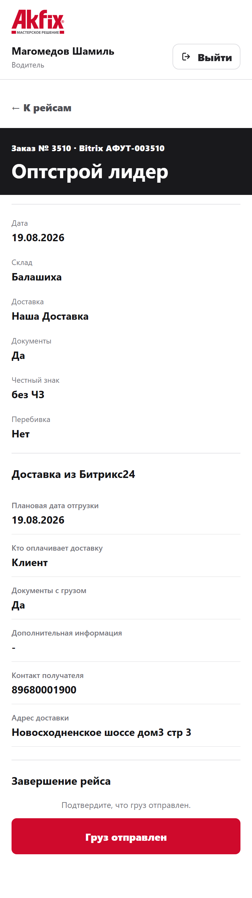
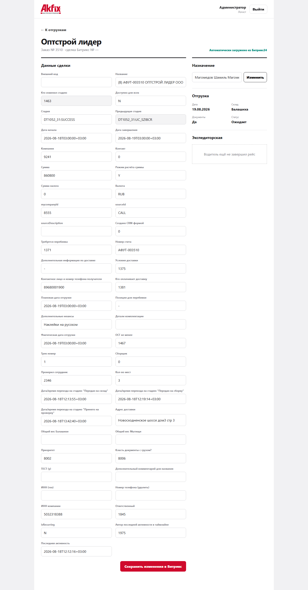
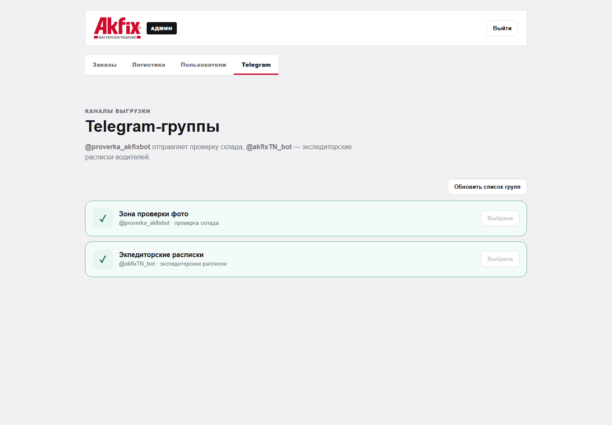
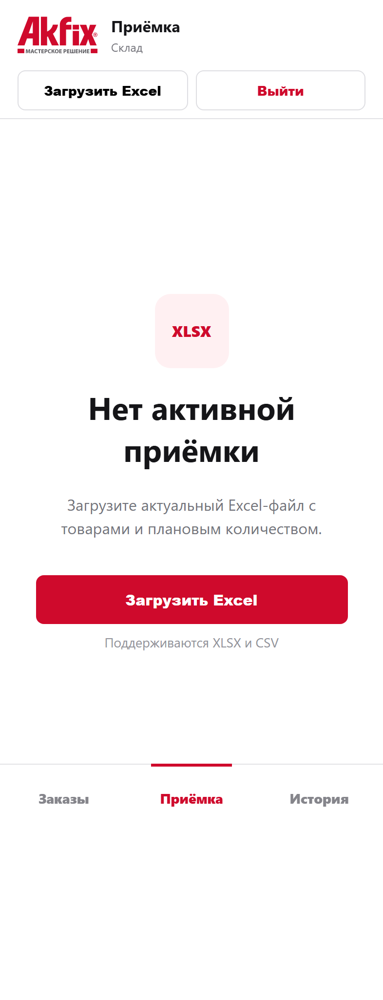
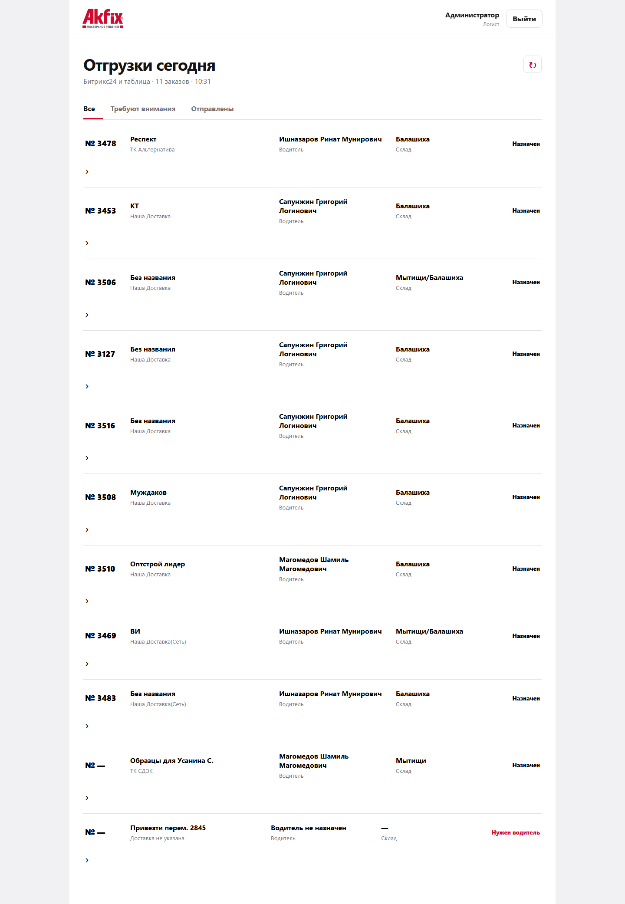
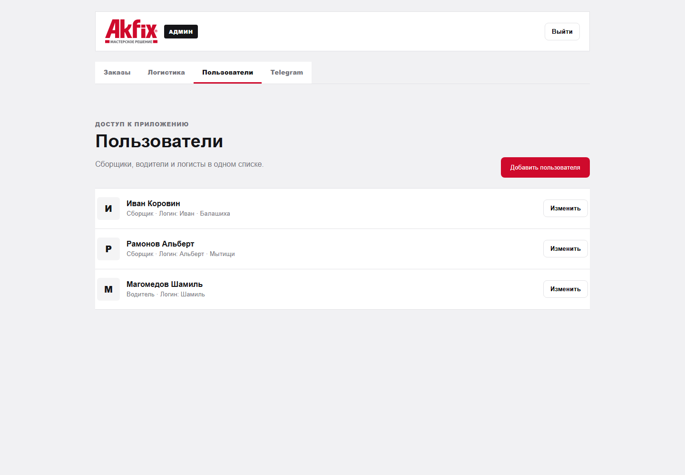

Логист назначает дату, склад и водителя.
Google SheetsРабочий продукт AKFIX
Один вход.
Весь путь заказа.
Склад, приёмка, водители, логистика и контроль руководителя работают в едином Web-приложении — с актуальными данными Bitrix24 и понятными действиями для каждого сотрудника.
5 рабочих ролей1 приложение24/7 доступ с телефона

Реальный экранКабинет водителя
2 рейсаназначены сегодня
Что изменилось
Сотрудник больше не собирает заказ по кусочкам.
Назначение приходит из таблицы, данные доставки — из Bitrix24, рабочее действие выполняется в приложении, а результат сохраняется там, где его ждут.
Сквозной процесс
От плана до подтверждённой отправки
Нужный сотрудник видит только свои заказы.
AKFIXПроверка, приёмка или доставка без лишних полей.
Телефон / WebФото, данные и статус доступны логисту и руководителю.
Bitrix24 + TelegramОдна система — разные рабочие места
Каждый видит ровно то, что нужно для его задачи
Скриншот из действующего приложения

Рабочий сценарий сборщика
Понятно без обучения: список → инструкция → действие


Кабинет водителя
Рейс уже собран из данных заказа
Водитель видит номер заказа, склад, способ доставки, контакт и адрес. Вкладки «Сегодня», «Завтра» и «История» помогают быстро найти нужный рейс.
- Только назначенные ему заказы
- Данные доставки из Bitrix24
- История выполненных рейсов

Экспедиторская расписка
Одно подтверждение — четыре связанных результата
Ниже показан рабочий сценарий. В презентации кнопка завершения не нажималась и данные в Bitrix24 не изменялись.
Открывает рейс и прикладывает фото расписки.
Файл сохраняется в поле «Фото экспедиторской расписки».
Фото и понятные данные заказа уходят в отдельную группу.
Сделка переходит в стадию «Груз отправлен».


Операционный контур
Приёмка, логистика и управление — в том же приложении

Приёмка
Новый Excel без старых остатков
Сотрудник может завершить текущую приёмку и спокойно загрузить следующий файл.

Логист
Контроль заказов и водителей
Просмотр данных, исправление доступных полей и изменение назначения.

Администратор
Роли и точные привязки
Создание пользователей и сопоставление имени водителя с таблицей.
Результат для бизнеса
Меньше ручных уточнений.
Больше управляемости.
Единый источник данных по заказуПонятная ответственность каждого сотрудникаДокументы привязаны к конкретной сделкеИстория доступна без поиска по чатамWeb-приложение работает на телефоне и компьютере
Готово к ежедневной работе
Единое приложение AKFIX объединяет склад и доставку в понятный процесс — от назначения заказа до подтверждённого результата.
Открыть приложение